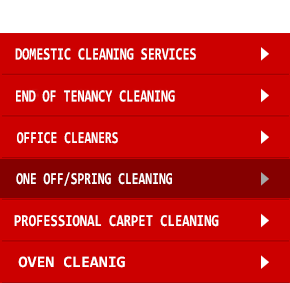
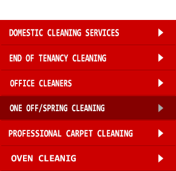

One-off / Spring Cleaning Services
If you’re a busy professional, you probably struggle to keep on top of the housework. A quick dust before you go off work, or running round with the hoover when you’ve got 5 minutes is fine, but at some point, you’ll need a spring clean. What about your skirtings, fridge/freezer, light fittings? Some people may be happy to give up their weekends. If you’re not one of them, why not try our deep cleaning service? Master Cleaning Team offer a professional, yet affordable spring cleaning service to rejuvenate and revitalise your house. One-off cleaning is ideal before or after a party, to spruce up after decorators, as a monthly once-over, or a seasonal blitz. |
Making your home sparkle
Our cleaners are highly trained professionals; vetted and fully insured for your peace of mind. We charge a flat-fee of just £14 per hour, with a 4 hour per visit minimum. Let us do all those mundane jobs you simply cannot spare the time for. The service includes: |
|
As an established Manchester agency, we offer a full service and can conveniently deep-cleanse your carpets, rugs and upholstery too for an additional fee. Just let us know what you need. We guarantee you an immaculately clean home, where everything looks as good as new. Get your quote, or call 07482376119 to book. |